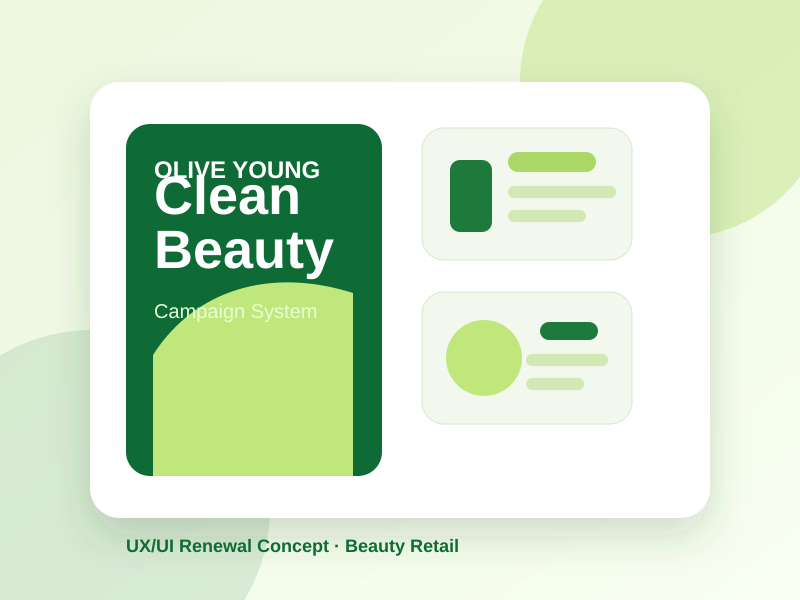
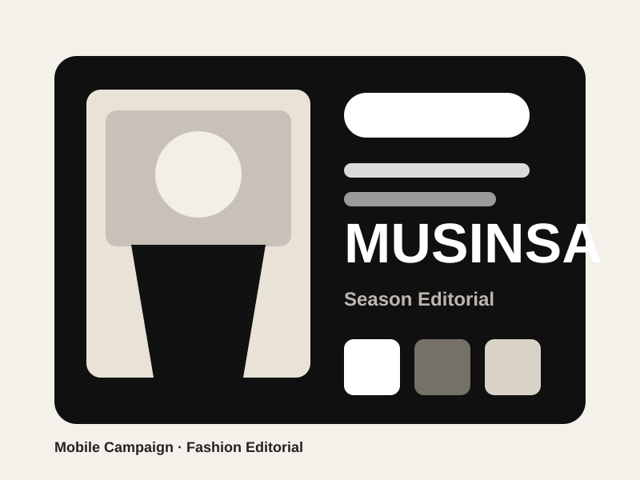
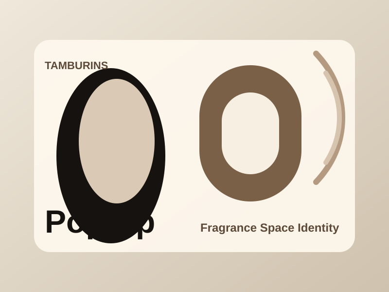
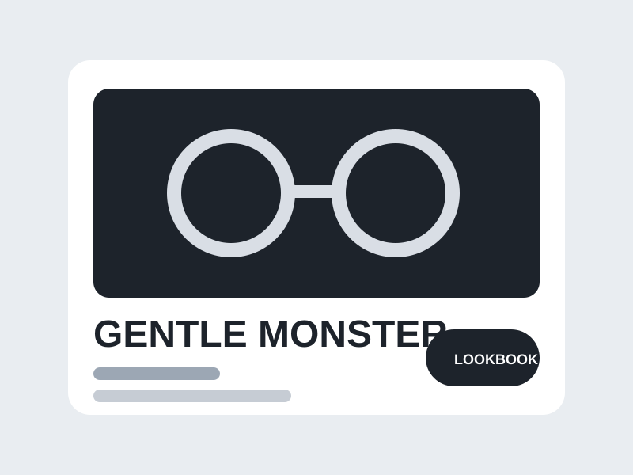
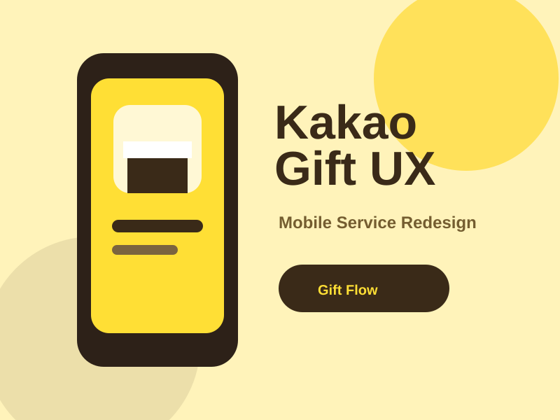
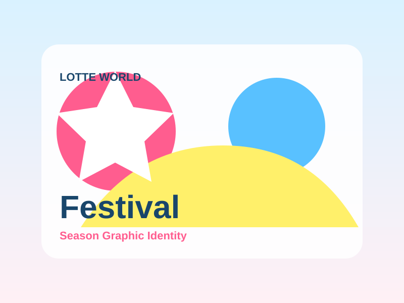

01올리브영 UXUI 리뉴얼Beauty Retail
Brand Identity / UXUI / Campaign
브랜드의 분위기와 사용자의 흐름을 섬세하게 연결하는 그래픽 디자이너입니다. 리서치부터 화면 설계, 캠페인 비주얼까지 완성도 있게 다룹니다.






Designer Profile
정승현은 브랜드 리서치, 컬러 시스템, 타이포그래피, 모바일 화면 설계를 연결해 실제 캠페인과 서비스에 적용 가능한 디자인 결과물을 만듭니다.
Selected Work
뷰티 카테고리 탐색, 추천 카드, 이벤트 배너를 하나의 그래픽 아이덴티티로 정리한 모바일 리디자인입니다.
패션 플랫폼의 시즌 기획전을 모바일 배너, 룩북, SNS 카드로 확장한 캠페인 그래픽 작업입니다.
향과 오브제의 분위기를 포스터, 공간 사인, 온라인 초대장으로 연결한 팝업 브랜딩 콘셉트입니다.
Design Process
브랜드의 기존 톤, 경쟁 서비스, 사용자 흐름을 살펴보고 개선 방향을 정리합니다.
컬러, 타이포그래피, 이미지와 그리드 규칙을 하나의 디자인 언어로 정리합니다.
앱 화면, 배너, 포스터, SNS 카드 등 실제 사용하는 매체로 확장합니다.
Contact
브랜드 리디자인, 모바일 UXUI, 캠페인 그래픽, 포트폴리오 협업을 함께 진행할 수 있습니다.